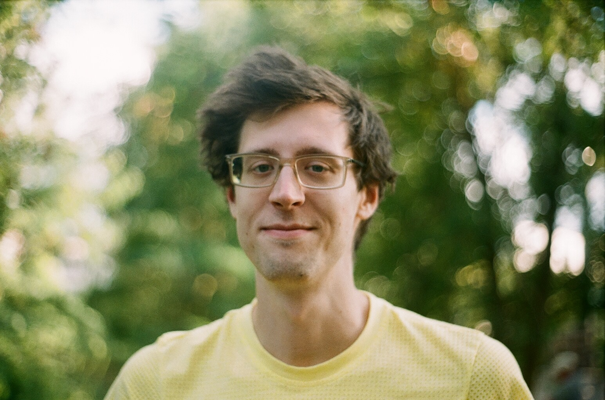

Sin Prelic, PhD
Hi! My name is Sin.
I’m a multidisciplinary biologist.

Former scientist, doctoral researcher and graduate at MPICE, IMPRS and Friedrich Schiller University with five published articles on molecular profiling, cell biology and neuroscience of Drosophila sensory systems.
Educated and trained prior at Utrecht University across a broad range of life-science projects involving fungi, (epi)genomics, molecular chaperones, microtubule dynamics, nanobodies, biomolecular docking and biotech applications.
Check out my research output and CV! If you enjoy tl;dr and BLUF practices, see my tl;dr page.
Hello there! I’m a biologist with diverse, international research lab experiences and broad technical training. I thrive on multidisciplinary projects and enjoy tackling complex questions through combined experimental-computational approaches. My past research interests span molecular biology, neuroscience, chemical ecology, animal behavior, genome biology, cytology, microbe physiology and data science. I’m comfortable navigating between biological disciplines, bring new perspective and rigor, and strive for inventive, original output.
Professionally, I’ve worked most recently on the molecular cell biology & neuroscience of olfaction at the Max Planck Institute for Chemical Ecology (dept. Evolutionary Neuroethology). I’ve worked in university, institute and hospital environments, and involve myself actively in various projects, often involving science communication, teaching, community organization and media production. For a little overview, see my complete CV.
My research portfolio consists of scientific publications in expert journals and a variety of presentations given at specialist conferences across the world. I keep a complete list of exemplary articles, preprints, posters and talks I’ve delivered on the research output page.
I’m versatile and like many things. Check some out on my random little tidbit gallery.
I’m a versatile PhD-graduate biologist with extensive international lab and life experience, cross-disciplinary expertise and a portfolio of publications in scientific journals and talks at international specialist conferences. My career has unfolded many disciplines, organisms, and research cultures. My scientific path has taken me through molecular cell biology, sensory neuroscience, ecology, genome biology, and computational analysis, often weaving these threads together in multidisciplinary projects.
I enjoy moving between fields, learning new techniques quickly, and building bridges between experimental and analytical perspectives. This breadth has given me a strong foundation in both wet-lab experimentation and data-driven inquiry, as well as an appreciation for how different scientific traditions approach the same biological questions. I feel like I have a lot to offer.
Trained chiefly in molecular cell biology and neuroscience, I now have over a decade of experience in various life science research labs, including university, institute and hospital environments. I’m comfortable navigating between biological disciplines, and personally strive for inventive and original output. My work always reflects this ethic and cross-disciplinarity.
So far, it has spanned areas like molecular biology and bioinformatics, cytology, ecology, sensory neuroscience, genome biology, epigenetics, molecular technique development, animal behavior, microbe physiology and evolution.
In addition to having spent many years planning and running experiments in labs, I’ve led and managed research projects (independently and collaboratively), frequently worked with large -omics and multidimensional datasets, involved myself in conference organization, colleague representation, university course teaching and student supervision, designed and tested novel biological probes, written many scripts for data analysis, all the while writing and illustrating and enjoying getting technical ideas across with clarity and elegance.
In short, I enjoy contributing to environments where interdisciplinary thinking and approach are valued and increasingly necessary. I relish in learning, trying things for their own sake, and applying my breadth of experience to find progress in new contexts.
I am a published multidisciplinary biologist with over a decade of academic research experience spanning molecular cell biology, sensory neuroscience, ecology, genome biology, cytology, epigenetics, bioinformatics, microbe physiology, evolution and animal behavior. My work integrates experimental and computational approaches. I have trained in multiple international laboratories, gaining broad methodological expertise and a strong foundation in both hypothesis-driven experimentation and quantitative analysis, as well as scientific writing and presentation.
Much of my formal research output is focused on the sensory biology and chemical ecology of insects. Chiefly, I’ve worked in olfactory neuroscience using Drosophila vinegar flies as a tractable model system. I’ve investigated and demonstrated the involvement of V-ATPase proton pumps, innexin gap junctions and hemichannels, nitric oxide and cGMP signaling, and non-neuronal support cell activity within the Drosophila antenna.
My doctoral dissertation unifies much of my work at the Max Planck Institute for Chemical Ecology and serves as an extensive treatise on insect olfaction. It also suggests future directions for research in emerging fields focusing on non-neuronal cell functions in compartmentalized systems. The authoring of a review concerning non-neuronal contributions to sensory systems is currently in progress.
Aside from this, I’ve also gathered experiences from major research projects:
- In a cellular dynamics lab, I studied angiogenesis using human endothelial spheroid and organoid models and determined roles of microtubule-organizing genes and organelles in blood vessel outgrowth.
- In a translational immunology lab, I adapted novel molecular techniques for massively parallel identification and quantification of DNA regulatory element activity across the human genome. Experiences included ChIP-seq, DNase-seq, STARR-seq and luciferase assays.
- In a fungal physiology lab, I profiled growth and saccharification capacities of thermophilic fungi, comparing their ability to degrade plant biomass relevant to advanced biofuel production.
I also completed several laboratory rotations involving extracellular chaperones, nanobody technologies and biomolecular docking simulations.
Going forward, I am particularly interested in complex biological systems and questions, cross-disciplinary research, combinations of computational and experimental biology, and unearthing molecular mechanisms with native organismal functions and behaviors.
I’m a versatile biologist with hands-on experience in molecular and cellular biology, neuroscience, and data-driven hypothesis testing and computational analysis. I’ve worked in fast-paced international research environments where adaptability, technical breadth, and cross-functional collaboration were essential.
My background includes bioinformatics, assay development, familiarity with a wide range of light microscopic techniques, genome-scale analysis and (electro)physiology.
I’m comfortable writing technically, navigating complex datasets, troubleshooting experimental workflows, and contributing to multidisciplinary teams, systems and projects with fine-grained attentiveness to detail and specific demand.
I bring a strong foundation in hypothesis-driven experimentation, quantitative analysis, methodological expertise and a practical, solution-oriented mindset. I love working in dynamic teams, and communicating insights with expert and non-expert colleagues, audiences and clients in tailored manners.
Born in Yugoslavia.
Raised young in Serbia and then Poland.
Moved to Prague, Czech Republic as a child, attending a British international school.
As an adolescent I’ve been lucky to travel to Denmark, Slovenia, Croatia, Hungary, Slovakia and Austria.
Moved to the Netherlands as young adult. There I obtained BSc and MSc degrees at Utrecht University.
Moved back to Prague for a few years, involving myself in local art communities and working on many creative projects and side gigs.
Then moved to Jena, Germany to pursue doctoral research in molecular biology/neuroscience at the Max Planck Institute for Chemical Ecology.
The stint involved many international conference travels and research visits, including Kenya, Tanzania, Portugal, France and various campuses/cities around Germany.
Currently traveling between cities and countrysides all over Europe. Recent trips include the UK, Belgium, Netherlands, Poland, Czech Republic and Germany.
Where to next? Who can tell…
😴 → ☕ → ✨ → 🔬 → 🧬🎵 → 📚 → 🧠 → 🤷 → ✨ → 🧪 → 🤷 → 🎨🎵 → 🧩 → 😴
or how about sssssssssssss
sss sss
ss sin sin ss
ss sin sin ss
ss sin ss
ss sssssssssssssss ss
ss s sin sin s ss
sss sss
sssssssssssss
or worse yet
░ ░ ░░░░░ ░ ▒▓▒▓
░░ ▒░░▒▓▒▓██░░ ░▒░▓▒█░ ▒▒ ░▒░
░▒▒ ░ ░ ▒▓▒█░░ ▒░▓░ ░█▓▒█▒░█▒ ░██▒░
█ ░▒░ the ░░░ ░▒▒▓▓░░░░ ░░░░░▓▒▒████░ ░ ██░░░░ ░ ░█░ ▒▒░ ▓▓░░
sky ░ ░ ░▓▒▒▒░░░▓▒░░░▒▒▒░░ ░░▓░ ░░░░▓░ ░█▒░░▒▓
▒░▒ ░░ ░░░ ░ ░████ ░░░░ ░ ░░░░ ░░░ ░░▓██▓▓░░ ▒░ ▒███ ░█ ░▒█
░░░ ░░ ░░░ ░ ░░ ███▒▒▓▓▒▓▓██▓▓▓▒▒░░▒██░ ░▒▒ ░▒▒██ ░
▓ ▒░░░░░░ ░▒▒░ ░▓▓████▓▒ ▒▓▒ ▒ █▒█▓▓▓▓█▓░░░▒░░░▒▓▒░░ ░░ ░ ░█
░ ░░░▒░ ▒▒▒▒▒▓████████░▒█ ▓ ░░▒▓▓░░░░▒▓▒▓▓▒░░████ ░██
░░ ▓▒▒░ ▒▒█████████▓▒ ▒████ ░░░▒▓▓▓▓░▒███▒ ▒███████
░░ ░░ ▓▓▓░ ░███████▓▒██▒░ ░ ░ █ █▓▓▒▒▒░░░░▒ ▓ ██▒▒▒▓████████▓
░░░ ██████ ██ ▒░▒▓▓▓░░░▓▒░▓█ ▓██▓███▓▓▓██▓
░░░░ ░ ░░▒██▓▒█▓ █ █▓░░▒░▒▓▒ ▒▒░█▓██▓ █▓░░███████░
░▒▒░░ ▒▒ ░░▒▓ ░ ▓███▓▒░ █▓███ ▒██▓ ▓███░ ███▓ ▓░░░░░▒▒█░ ░▒ ▒▒▒▓█ ░ █▒
░ ▒ █░ ░ ░░░░░░░ ▒▒▓░ █ ▒ ██▒▒▒▒▓░ ▒█▓ ▓███ █▒ ░ ░░▒▓ ░ █ ▒ █▓▓▓█
░ ░ ░▓░░░░▒▓▓▒░▒███░█ █▓██░ ░░███▓░▓ ▓▒█░▓█▒ ░░░▓▓██▓ ▓█░ ██████ ████
█▒ ▒▒▒▒▒▒░░░▒░░▒█░ ░ ████▓▓░█▓░▒▓▓▓▓░██ ▓▓ ▓█████████
░███▓░ ░▒░▒▒▒▒░░░░░░ ░█ ░ █ ░░▒▒▒▓▓██▓▓▓██ █ █ ░█▓██░ █
░ ▒█▓ ░ ░░░▓███▓████▒▒▒▒░ ░ ░▓ ███████▓ ██▓▓▓░▒░▒▓▓▓▓█░████░ ▒█ ░██ ▓ █▒
░░ █▓ ░░░░░░░▒▓█ ░▓ ▒ ▓█░ ░░▒▒▒▓▓▒▒▒▓▒▓▓▓▓█▒▓▓▓▒ ░ ████ ▓░
░ ░ ░ ░░ ░▓ ░██████████ ░ ██░░░░░▒▓▓▓▓▒▒▒▓█▓▓▓▓███▓█ ██ ██
░ ▓████▒▒░░░░░░░░░██ ░░ █░ ░▒░▒▒▒▓██▓▓▓▓▓▓▓▓██████ ██▓
░▓▓ ░▓██▓▒░░░░░▒░░░ ░░▒░ ░ ░ ▓█░░░▒▓███▓░░░▒▓▒▓▒▓▒▓██░░█▒ █ █▓░
▒▒ ▒▓▓░ ░░░░░ ░ █▒▓▓▓█▓▓▒░░ ░▒▓█████▒██░ ░ ██ █░░
░ ░ ░░░░░ ░░░▓▓▓▓░░ ░░▓▓██▓ ▒██▓███░░▓████▓▒▓░ ░█░ ░█ ████ ▓ ██
░▓▒░▒▒▒▒░░░▒▒▒ ░ ░▒▓ ░░░ ░▒ ▒ █▓░░ ░░░▒▒▓█████░ ░ ▒█ ▓████████████░░
▒░ ░▓█████▓▒░ ░░░░▒▒▒▒░░ ░▒░░▒██ ░▒▒▓░ █████▓▓▓▓▓▓▓▓▓▒▒▓████▓███▓▓██▒░▓▓██▓░▒
██▓███░▒██ ██▓░░░░░░░░░░▒░░▓▓█▓▓▓████ ░ ▓██████▓▓░░ ▒▓▓████▓▓████▒░░█▓█████
▓░░░ ░▓░ ▒▒▒░░░▒▒░▒▒▒▒▒▒▓████ ░ ░ ░ ▓ ▒██████▓▓████▓▓█▓██████▓░▓█▓░░
░█ ░ ▓░ ░███▒▒▒░▓█████▓ ░ ░░░ ░░ ░ ░██▓▒▓▒▓█▓▓█▒ ░▒█
░▓░ ▒░ ▒▓███████ ░ ░ ░ ░░░▒▒█ ░ ░ ███▓▒▓██▒░░░▓▓▓▒░░
░ ░ ░░░░░ ░▒ ░ ░██ ░░ ▒░░ ░░░░▒▒▓█▓ ░ █████▓▓▒██████▓▒
▒▒ ░▒░ ░ ░░░░▒██ ░▓▓▓▒░░ ░ █████░ ▒██▓░
░█▒░░▒▒▒░░░▒▒░░░░▒██ ███▓░ ▓███▓░▒▒
███▒█▒░░░░░▒▓▒░▒█▒ ░░ ░ ██░░▒▓▒░░ ▓▒
░▓░░░░░ ░ ░▒▓▓
or rather unforgivably, an explanation of logo and favicon choice:
best to stop while ahead.